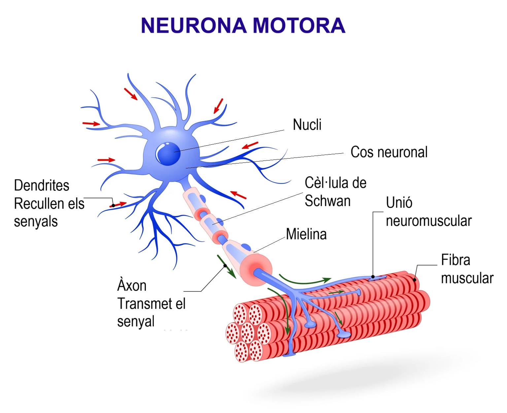
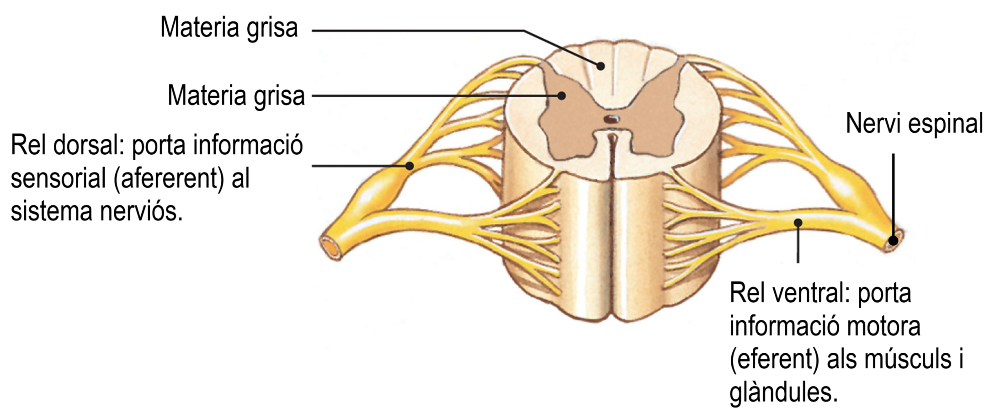
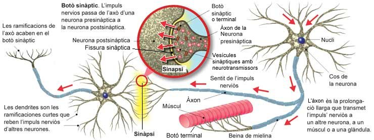
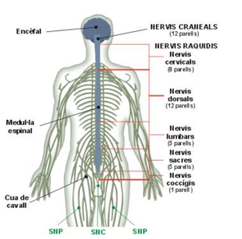
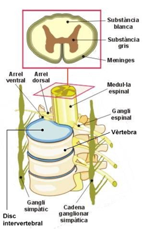

1. La funció de relació. És la funció basada en la captació de les variacions del mitjà, els anomenats estímuls, la seva avaluació i l'emissió de les respostes adequades.
2. Sistemes i aparells implicats en la funció de relació. Són els següents:
Els receptors. Són els anomenats "òrgans dels sentits". Són òrgans aïllats en íntim contacte amb el sistema nerviós. Per exemple els ulls, el nas, la llengua, etc.
El sistema nerviós. És el sistema constituït bàsicament pel teixit nerviós, que és el teixit format per les cèl·lules nervioses o neurones.
El sistema endocrí. És el format per les glàndules endocrines, és a dir glàndules que segreguen substàncies (hormones) a la sang, les quals provoquen efectes concrets en la cèl·lules.
Els efectors. Són els òrgans i aparells encarregats de realitzar les respostes. Aquestes poden ser de dos tipus: els moviments i les secrecions. Els tipus de efectors són:
- L'aparell locomotor. És el constituït pel sistema esquelètic i el sistema muscular. Són els responsables de realitzar els moviments.
- Les glàndules exocrines. Són les glàndules que segreguen substàncies a l'exterior, com per exemple les sudorípares, o a l'interior de tub digestiu, com les glàndules gàstriques.
Les neurones i la transmissió de l'impuls nerviós. Les neurones són cèl·lules especialitzades en la transmissió d'informació gràcies que la seva membrana és capaç de generar febles corrents elèctriques que avancen d'un extrem a l'altre, l'anomenat impuls nerviós. Les neurones que condueixen l'impuls nerviós cap al sistema nerviós central es diuen sensitives i les que el condueixen cap els músculs i les glàndules s'anomenen motores.
Les neurones motores presenten un cos cel·lular (cos neuronal) en el que hi ha el nucli i els orgànuls, una llarga prolongació anomenada àxon i nombroses petites prolongacions anomenades dendrites. Les neurones sensitives presenten un cos neuronal i dos axons.

L'axó també s'anomena fibra nerviosa. Pot està recobert per una sèrie de cèl·lules que formen l'anomenada beina de mielina que és de color blanc. Els feixos d'aquests axons formen l'anomenada substància blanca del sistema nerviós. . Els cossos neuronals i els axons sense beina de mielina formen l'anomenada substància gris.
Cada nervi espinal, abans d'entrar a la medul·la es divideix en dues branques o rels, una ventral o motora i l'altre dorsal o sensitiva.

Les neurones es connecten entre si sense arribar a tocar-se (sinapsi). Els receptors estimulen en la neurona l'impuls nerviós que avança pel axó fins el botó sinàptic o terminal, allí provoca la generació d'unes petites vesícules que contenen unes substàncies anomenades neurotransmissors, que travessen la fissura sinàptica i són captades per les dendrites de la següent neurona, generant en ella un nou corrent elèctrica i així successivament, fins arribar als òrgans efectors. És la denominada transmissió de l'impuls nerviós.

El sistema nerviosos humà. El sistema nerviós presenta dues parts, el sistema nerviosos central (SNC) i el sistema nerviós perifèric (SNP).
El Sistema Nerviós Central (SNC). Està constituït pe l'encèfal i per la medul·la espinal. Ambdós òrgans estan protegits per ossos (crani i columna vertebral respectivament) i recoberts per tres membranes protectores denominades meninges, existint un líquid amortidor, el líquid cèfalo-raquidi, entre la més interna i la segona. El SNC és l'encarregat de rebre i interpretar els impulsos sensitius i generar els impulsos motors.
El Sistema Nerviós Perifèric (SNP). És el conjunt de nervis que connecten el sistema nerviós central (l'encèfal i la medul·la espinal) amb les diverses parts del cos. Els nervis són llargs fils constituïts per feixos d'axons de diferents neurones. Els més gruixuts presenten una membrana externa protectora. És doncs una estructura similar a la dels cables elèctrics domèstics. Els nervis es poden classificar segons tres criteris:
1) Segons el sentit en què transmeten l'impuls nerviós es diferencien tres tipus de nervis: el sensitius (condueixen l'impuls nerviós cap al sistema nerviós central), els motors (condueixen l'impuls nerviós cap els músculs i les glàndules) i els mixtos (condueixen l'impuls nerviós en els dos sentits).
2) Segons del lloc d'on surten es diferencien dos tipus de nervis: els nervis cranials que surten del crani i els nervis espinals o raquidis que surten de la medul·la espinal.
a) Nervis cranials. Només són 12 parelles (12 cap a l'esquerra i 12 cap a la dreta). Uns són sensitius , altres motors i altres mixtos. Bàsicament controlen els músculs del cap i el coll, exceptuant un, el nervi vague que regeix moltes vísceres..
b) Nervis raquidis. Són 31 parelles. Tots són de tipus mixt. Els de la regió sacre, degut a la seva forma, reben el nom de "cua de cavall". Tots els nervis raquidis presenten una arrel dorsal i una arrel ventral. L'arrel dorsal és sensitiva i presenta un gangli, denominat gangli raquidi o espinal, constituït pels cossos de les neurones que reben informació de la pell i dels òrgans. L'arrel ventral és motora, és a dir porta informació cap a la pell i els òrgans.
3) Segons coordinen actes involuntaris o voluntaris es diferencien dos tipus de nervis: els nervis del Sistema Nerviós Autònom i els nervis del Sistema Nerviós Voluntari.
a) Sistema Nerviós Autònom o Vegetatiu. És el que controla de forma involuntària - totalment o parcialment les funcions de les vísceres (cor, pulmons, estómac, intestí i bufeta de l'orina), la pressió arterial, la producció de suor, la producció d'orina i la temperatura corporal. Està controlat per l'hipotàlem i la medul·la espinal. Els nervis estan formats quasi totalment per fibres amielíniques. Es diferencien dos tipus:
- El Sistema Nerviós Autònom Parasimpàtic. És el que predomina en els moments de relaxació. Està constituït pel nervi cranial vague i comparteix els nervis raquidis de la regió sacre.
- El Sistema Nerviós Autònom Simpàtic. És el que predomina en els moments de tensió. Està constituït per nervis que comparteixen la resta dels nervis raquidis. Les fibres nervioses d'aquest sistema estan parcialment separades de la resta dels nervis raquidis i formen dues cadenes de ganglis, una a cada costat de la columna vertebral.
b) Sistema Nerviós Voluntari. És el que controla totalment o parcialment les accions voluntàries del nostre cos. Aquestes poden ser accions conscients, com per exemple agafar un objecte que volem, o inconscient, com per exemple avançar la cama dreta al caminar. Està controlat pel cervell. El nervis estan formats totalment per fibres mielíniques.
|  |
 |